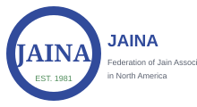
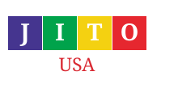
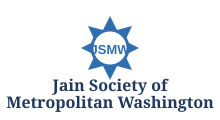
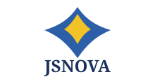

National

Jain American Impact Network (JAIN) brings together Jain organizations and leaders in America to collaborate on initiatives that strengthen the Jain community, increase awareness of Jain values, and create meaningful civic and community impact.
JAIN is an umbrella collaboration, not a replacement for its member organizations.
Each participating organization remains independent. JAIN creates a common platform for organizations to come together when a shared effort can create more impact than any one organization acting alone.
Bring national and regional Jain organizations together around common priorities.
Help the Jain community communicate its values and contributions with a stronger collective voice.
Launch focused initiatives where collaboration can create measurable community or civic impact.
JAIN currently brings together national organizations and regional Jain organizations in the Washington metropolitan area.




JAIN is currently an informal umbrella collaboration and is not being presented as a separate tax-exempt legal entity.
JAIN can serve as a common platform for initiatives that benefit from shared participation - from Capitol Hill engagement and public awareness to educational programs, interfaith relationships, community service, and future national initiatives.